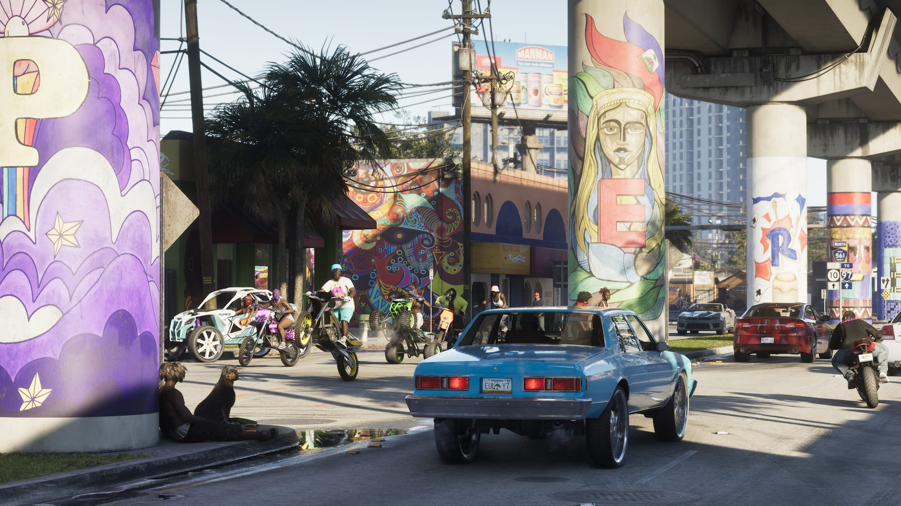

© Rockstar Games / Take-Two Interactive
Plus de 221 véhicules repérés dans les médias officiels
La rubrique Véhicules a été complétée : elle compte désormais 221 fiches, chacune illustrée par une image de GTA 6.
Parmi les 204 fiches ajoutées, 95 sont de nouveaux modèles jamais vus dans la série et 109 sont des retours de véhicules d'épisodes précédents, tous repérés dans les bandes-annonces, captures et artworks officiels de GTA VI. Beaucoup n'ont pas encore de nom officiel : ils sont indiqués « façon » le modèle réel qui les inspire, ou « modèle non nommé ».
Répartition des nouvelles fiches : 80 voitures, 49 SUV, pick-up et utilitaires, 14 camions et bus, 14 motos et quads, 27 bateaux, 10 aériens et 10 autres véhicules (vélos, trains…). Les filtres de la page permettent de naviguer par catégorie.
Les images viennent de bandes-annonces et de captures officielles relayées par le GTA Wiki ; chaque fiche renvoie vers sa page source.